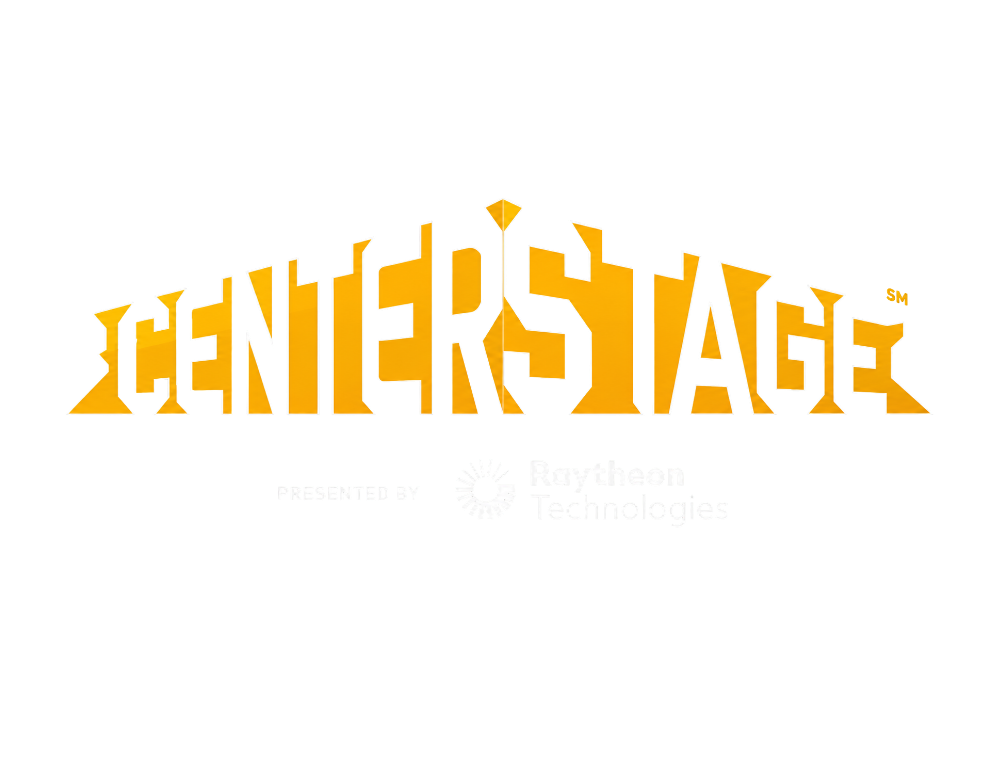
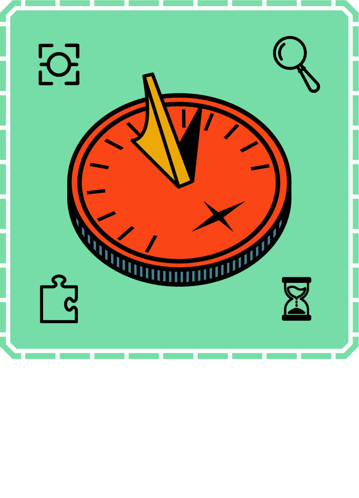
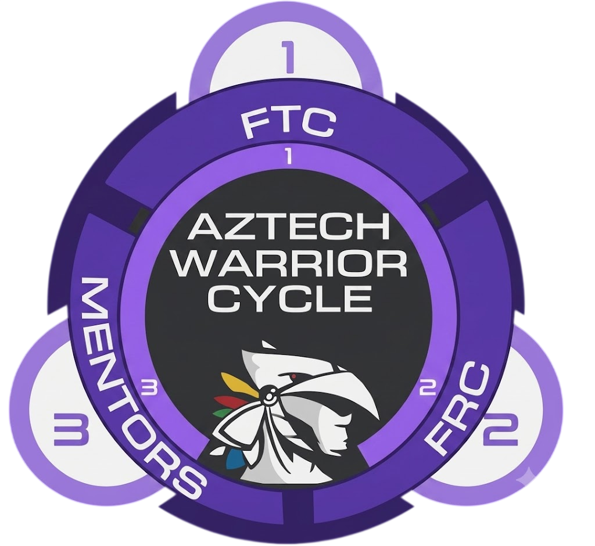
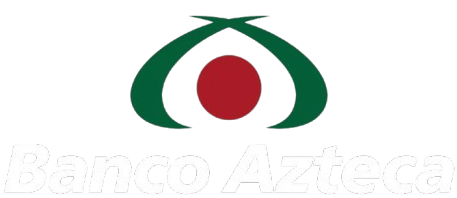
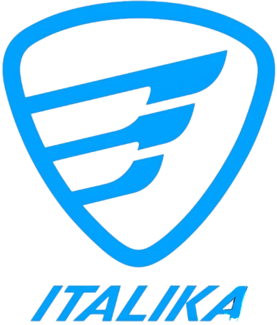
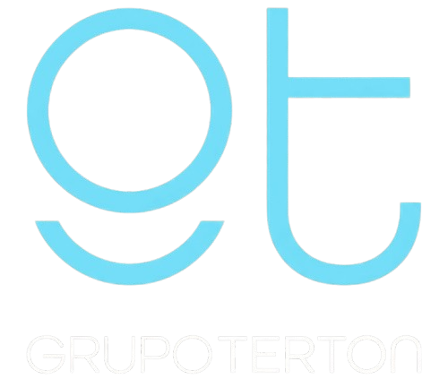

Somos Aztech II (FTC 17626), un equipo de FIRST Tech Challenge en México apasionado por la innovación, la inclusión y el uso intencional de la tecnología. Integramos a personas de orígenes diversos —niños, adolescentes, mujeres, migrantes y personas con discapacidad o en rehabilitación— para desarrollarse en áreas STEM mediante la robótica y generar conciencia sobre la reducción de la huella de carbono.
Creemos que la tecnología debe ser accesible para todos y una herramienta de cambio social, no solo un fin técnico. Nacimos en 2019 dentro de FTC para formar jóvenes líderes capaces de transformar su entorno, bajo una filosofía de crecimiento constante, colaboración y aprendizaje continuo.
Hemos evolucionado temporada a temporada: en Ultimate Goal consolidamos nuestra identidad, y hoy, en Decode (2026), acumulamos logros como el Inspire Award y el Think Award (en dos ocasiones), reflejo de la solidez de nuestra ingeniería y nuestro impacto en la comunidad.
Pasa el cursor sobre cada temporada para ver su imagen, eventos y premios.
Participación en temporada — sin resultados destacados registrados.






Formar líderes integrales en robótica, ingeniería y trabajo en equipo, capaces de desarrollar soluciones innovadoras y proyectos sociales de alto impacto que atiendan problemas reales de nuestra comunidad.
Lograrlo a través de un modelo de formación integral basado en FIRST y STEAM, que promueve la excelencia técnica, la innovación constante, el trabajo colaborativo y el compromiso social, inspirando a más jóvenes a transformar su entorno mediante la ciencia y la tecnología.
Porque creemos en el poder de la robótica y la educación como herramientas para transformar vidas, derribar barreras y generar un cambio positivo, sostenible y significativo en la sociedad.
Integramos a personas de orígenes diversos —niñas y niños, adolescentes, mujeres, migrantes y personas con discapacidad o en rehabilitación— dándoles la oportunidad de desarrollarse en STEM a través de la robótica.
Adoptamos el morado como color insignia, reflejando nuestro compromiso de inspirar a niñas y mujeres a seguir carreras en campos STEM.
Creemos que la tecnología debe ser accesible para todas las personas y usarse como herramienta de cambio social, no solo como un fin técnico en sí mismo.
Ahtziri · Regina · Ana
Many · Diego Yael · Dany
El Aztech Warrior Cycle refleja la identidad y el crecimiento del equipo. Consta de tres etapas:
Estudiantes de preparatoria entran al equipo de FTC: desarrollan sus habilidades, aprenden a trabajar en equipo y viven su primer FIRST.
Al graduarse pasan a FRC, con mayor complejidad: desarrollan nuevas habilidades y se especializan, usando lo aprendido en FTC como base.
Terminan su etapa como estudiantes y regresan como mentores: guían y apoyan a las nuevas generaciones, devolviendo lo que FIRST les dio.

Nuestros patrocinadores creen en la misión del equipo y en el impacto de FIRST. Buscamos relaciones recíprocas y de largo plazo.

Conglomerado mexicano que reúne a TV Azteca, Elektra y Banco Azteca, entre otras empresas de medios, comercio y finanzas.

Brazo social de Grupo Salinas (1997): proyectos sociales, ambientales y educativos como Plantel Azteca y Limpiemos México.

Plantel Azteca es una red de escuelas de excelencia auspiciada por Fundación Azteca de Grupo Salinas. Su objetivo es brindar educación gratuita a jóvenes talentosos de bajos recursos económicos.

Cadena con miles de tiendas en América Latina: electrónica, electrodomésticos, motos y servicios financieros.

Banco que lleva servicios financieros a comunidades con poco o nulo acceso a la banca tradicional.

Marca mexicana de motocicletas, líder en ventas en el país, con red propia de servicio y refacciones.

Empresa mexicana de tecnología y telecomunicaciones: equipos eléctricos, cableado y soluciones de comunicación.